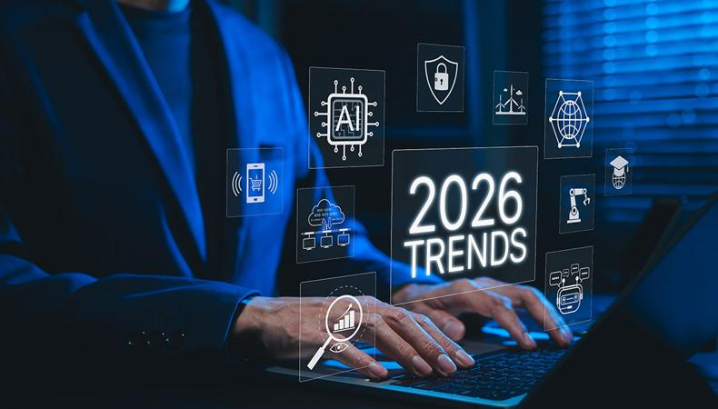

Ana Sayfa |
Nedir? |
Tarihçe |
Kullanım Alanları |
Çeşitleri |
Avantaj & Riskler |
Haberler |
Gelecek |
SSS |
Hakkımızda
Yapay Zekanın Geleceği
Yarının dünyasında yapay zekanın hayatımızı ve teknolojiyi nasıl dönüştüreceği üzerine öngörüler.

Gelecek Beklentileri:
- Genel Yapay Zeka (AGI): Makinelerin insan seviyesinde akıl yürütme, öğrenme ve problem çözme yeteneğine bir adım daha yaklaşması bekleniyor.
- İnsan-Yapay Zeka İş Birliği: Rutin işlerin tamamen otomasyona devredilmesiyle, insanların daha çok yaratıcı, stratejik ve sanatsal alanlara odaklanacağı öngörülüyor.
- Kişiselleştirilmiş Deneyimler: Eğitim, sağlık ve günlük yaşamda tamamen bireye özel çalışan akıllı asistanlar standart hale gelecek.
- Sürdürülebilirlik ve Enerji: Çevre dostu yapay zeka modelleri sayesinde, devasa sistemlerin karbon ayak izinin azaltılması hedefleniyor.